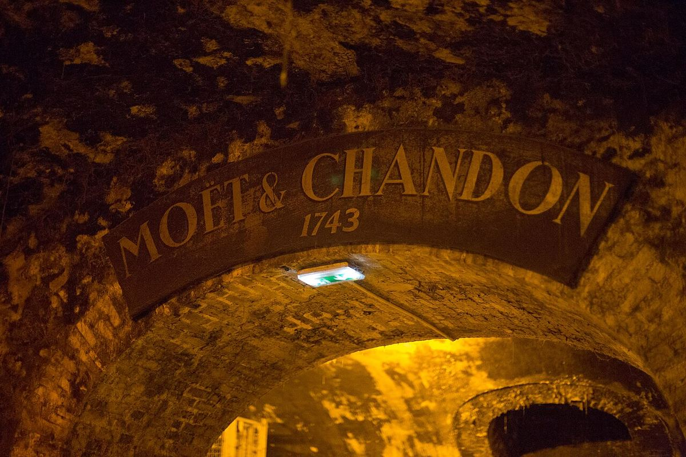

SPUMANTE
Maison di champagne fondata nel 1743 a Épernay da Claude Moët, oggi parte del gruppo LVMH e una delle case più diffuse al mondo.

Moët & Chandon fu fondata nel 1743 da Claude Moët, commerciante di vini di Épernay. Il nipote Jean-Rémy Moët ampliò notevolmente l’attività tra la fine del Settecento e l’inizio dell’Ottocento e intrattenne un rapporto stretto con Napoleone Bonaparte, che visitò la casa in diverse occasioni. Nel XIX secolo entrò nella direzione Pierre-Gabriel Chandon, genero di Jean-Rémy, e la ditta assunse il nome di Moët & Chandon.
La maison ha sede sull’Avenue de Champagne di Épernay, sotto la quale si snodano chilometri di gallerie scavate nel gesso dove le bottiglie riposano durante l’affinamento. È uno dei maggiori proprietari di vigneti della Champagne, con appezzamenti distribuiti nelle principali zone della denominazione, e lavora le tre varietà classiche: Pinot Noir, Pinot Meunier e Chardonnay.
Il suo vino più noto è il Moët Impérial, un brut senza annata creato nel 1869, affiancato dal Rosé Impérial, dalle versioni demi-sec Nectar e dagli champagne millesimati Grand Vintage. Dom Pérignon, la cuvée di prestigio nata all’interno della casa, è oggi commercializzata come marchio a sé. Dalla fusione che ha dato vita a LVMH, Moët & Chandon fa parte del gruppo Moët Hennessy.
Lo stile della casa punta su uno champagne fruttato e accessibile, dal perlage fine e dal profilo fresco, pensato per essere costante da una bottiglia all’altra grazie all’assemblaggio di numerosi vini base e vini di riserva.
Offre visite guidate alle sue cantine sotterranee di Épernay, con degustazione, su prenotazione.